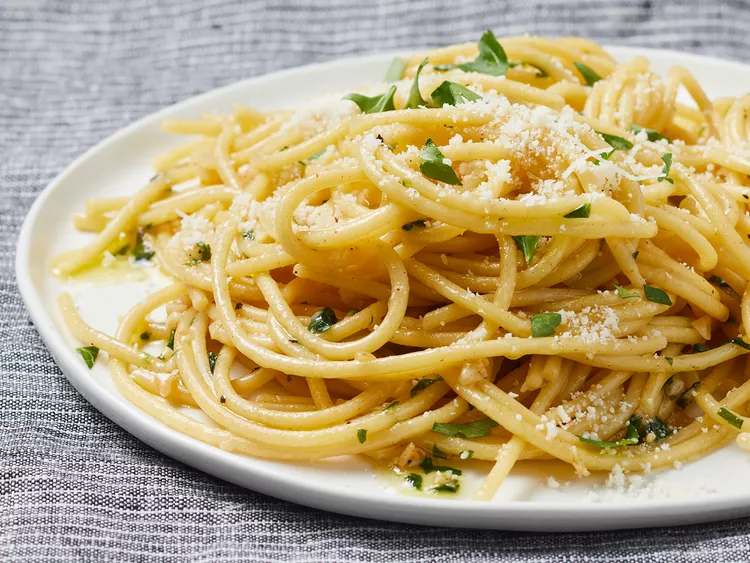

Simple Pasta

Simple Pasta Description
These buttered noodles are quick, easy, and perfect for when you don’t want to make a grocery run. Just toss
pasta with butter, parsley, and Parmesan, and you've got a delicious dish with whatever you’ve got in the
pantry. No fuss, just flavor!
Ingredients
- 1 (8 ounce) package dry spaghetti
- 8 tablespoons butter
- 2 tablespoons minced garlic
- 1 tablespoon chopped fresh parsley
- salt and freshly ground black pepper to taste
- 1 pinch cayenne pepper, or to taste (optional)
- 1 cup grated Parmesan cheese
Cooking Steps
- Cook the spaghetti – Boil a large pot of salted water, then add the spaghetti. Cook according to the package
instructions (about 8-10 minutes) until al dente. Drain and set aside.
- Make the garlic butter sauce – In a large pan, melt the butter over medium heat. Add the minced garlic and
cook for about 1 minute until fragrant (don’t let it burn).
- Season – Stir in the parsley, salt, black pepper, and cayenne (if using).
- Combine with pasta – Add the drained spaghetti to the pan and toss to coat in the butter sauce.
- Add Parmesan – Sprinkle in the grated Parmesan and toss again until everything is well mixed.
- Serve – Taste and adjust seasoning if needed. Serve warm and enjoy!
Home